Run result: inconclusive.
C++ is the pinned RapidYenc baseline; Rust is the built candidate. Identical synthetic article fixtures execute real YencService and memory-backed NNTP BODY calls. This paired comparison does not measure network, database, archive metadata or production throughput.
Speedup = C++ time / Rust time. 1× means equal time. Time saved = 100 × (1 − Rust time / C++ time). Decisions and simultaneous confidence intervals come from the uninstrumented paired benchmark; inconclusive estimates do not establish a gain.
| Stratum | Decision | Speedup | 95% speedup interval | Time saved | Eligible / invalid |
|---|---|---|---|---|---|
| 4096 B / ordinary / tolerant | useful_improvement | 1.125× | 1.081–1.167× | 11.08% | 31 / 0 |
| 4096 B / ordinary / strict | inconclusive | 1.089× | 1.020–1.138× | 8.18% | 31 / 0 |
| 4096 B / ordinary / body | inconclusive | 1.105× | 1.020–1.139× | 9.51% | 31 / 0 |
| 4096 B / heavy / tolerant | useful_improvement | 1.318× | 1.263–1.383× | 24.14% | 31 / 0 |
| 4096 B / heavy / strict | useful_improvement | 1.253× | 1.191–1.312× | 20.22% | 31 / 0 |
| 4096 B / heavy / body | useful_improvement | 1.159× | 1.113–1.187× | 13.72% | 31 / 0 |
| 524288 B / ordinary / tolerant | useful_improvement | 1.496× | 1.465–1.560× | 33.14% | 31 / 0 |
| 524288 B / ordinary / strict | useful_improvement | 1.461× | 1.429–1.516× | 31.55% | 31 / 0 |
| 524288 B / ordinary / body | useful_improvement | 1.218× | 1.212–1.234× | 17.87% | 31 / 0 |
| 524288 B / heavy / tolerant | useful_improvement | 1.939× | 1.891–1.989× | 48.42% | 31 / 0 |
| 524288 B / heavy / strict | useful_improvement | 1.915× | 1.874–1.950× | 47.78% | 31 / 0 |
| 524288 B / heavy / body | useful_improvement | 1.248× | 1.234–1.263× | 19.89% | 31 / 0 |
| 1048576 B / ordinary / tolerant | useful_improvement | 1.487× | 1.467–1.508× | 32.77% | 31 / 0 |
| 1048576 B / ordinary / strict | useful_improvement | 1.465× | 1.435–1.492× | 31.72% | 31 / 0 |
| 1048576 B / ordinary / body | useful_improvement | 1.168× | 1.151–1.175× | 14.39% | 31 / 0 |
| 1048576 B / heavy / tolerant | useful_improvement | 1.850× | 1.828–1.872× | 45.95% | 31 / 0 |
| 1048576 B / heavy / strict | useful_improvement | 1.820× | 1.783–1.849× | 45.06% | 31 / 0 |
| 1048576 B / heavy / body | useful_improvement | 1.203× | 1.190–1.214× | 16.90% | 31 / 0 |
| 8388608 B / ordinary / tolerant | useful_improvement | 1.501× | 1.479–1.522× | 33.37% | 31 / 0 |
| 8388608 B / ordinary / strict | useful_improvement | 1.477× | 1.443–1.519× | 32.32% | 31 / 0 |
| 8388608 B / ordinary / body | useful_improvement | 1.131× | 1.124–1.144× | 11.55% | 31 / 0 |
| 8388608 B / heavy / tolerant | useful_improvement | 1.859× | 1.840–1.886× | 46.22% | 31 / 0 |
| 8388608 B / heavy / strict | useful_improvement | 1.814× | 1.791–1.846× | 44.86% | 31 / 0 |
| 8388608 B / heavy / body | useful_improvement | 1.180× | 1.163–1.206× | 15.23% | 31 / 0 |
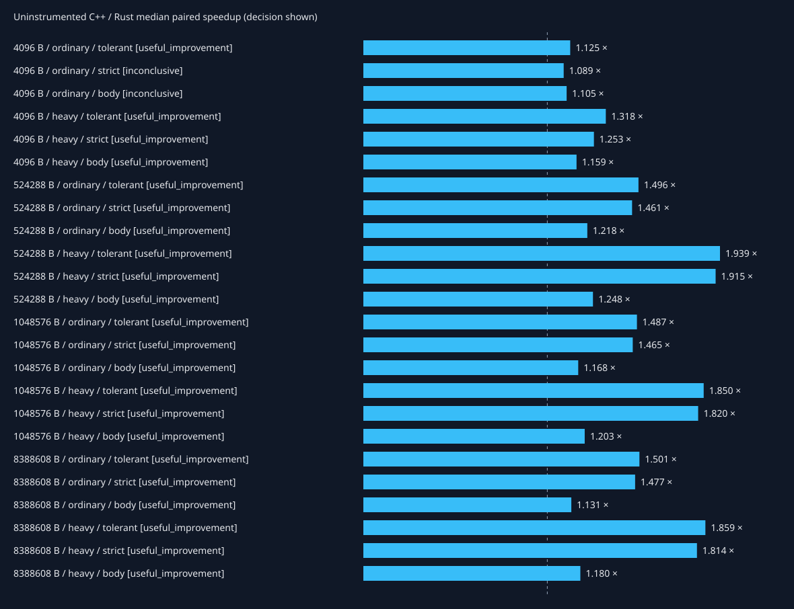
The separate Rust-only metadata workload executes NzbFingerprintAnalyzer and native RAR5/NNTP metadata parsing over a fixed verified archive-header fixture. It has no C++ counterpart and supplies no migration speedup estimate.
Xdebug profiles include process bootstrap, fixture setup, warmup, decoding and correctness checks. Exclusive function time is shown below; inclusive call-edge cost is listed separately and must not be added across edges. FFI calls are opaque here; native internals appear in the separate CPU sampling flamegraphs. Instrumentation changes cost and these numbers are not speedup measurements.
Profiling setup/run receipt: {"exit_code": 0, "phase": "native-build-and-capture", "script_receipt": {"exit_code": 0, "phase": "capture-summary", "status": "complete"}, "status": "complete"}
Total exclusive profiled cost: 1891.115 ms.
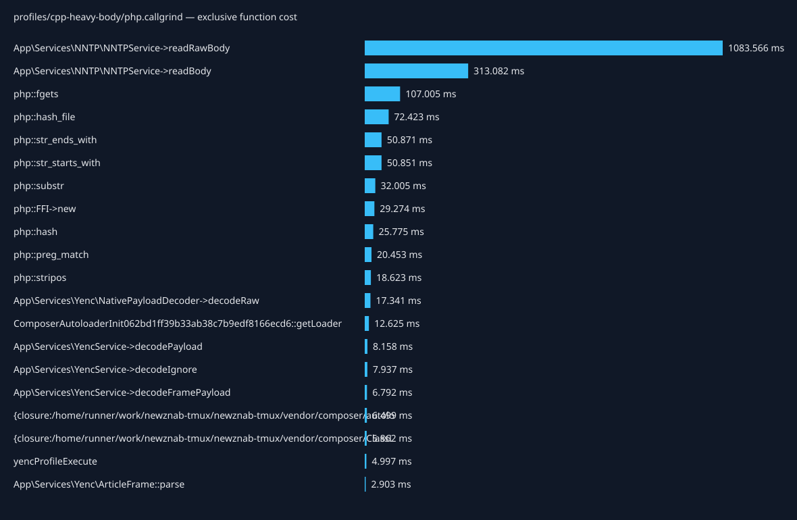
| Caller → callee | Calls | Inclusive cost (ms) |
|---|---|---|
| {main} → yencProfileExecute | 1 | 1789.963 |
| yencProfileExecute → Tests\Support\YencNntpHarness->fetch | 101 | 1755.684 |
| Tests\Support\YencNntpHarness->fetch → App\Services\NNTP\NNTPService->_getMessageByMessageID | 101 | 1754.932 |
| App\Services\NNTP\NNTPService->_getMessageByMessageID → App\Services\NNTP\NNTPService->readBody | 101 | 1752.689 |
| App\Services\NNTP\NNTPService->readBody → App\Services\NNTP\NNTPService->readRawBody | 101 | 1289.335 |
| App\Services\NNTP\NNTPService->readBody → App\Services\YencService->decodeIgnore | 101 | 150.242 |
| App\Services\YencService->decodeIgnore → App\Services\YencService->decodeFramePayload | 101 | 116.097 |
| App\Services\NNTP\NNTPService->readRawBody → php::fgets | 827695 | 107.005 |
| App\Services\YencService->decodeFramePayload → App\Services\YencService->decodePayload | 101 | 76.730 |
| {main} → php::hash_file | 14 | 72.423 |
| App\Services\NNTP\NNTPService->readRawBody → php::str_ends_with | 827695 | 50.852 |
| App\Services\NNTP\NNTPService->readRawBody → php::str_starts_with | 827594 | 50.850 |
| App\Services\YencService->decodePayload → App\Services\Yenc\NativePayloadDecoder->decodeRaw | 101 | 48.219 |
| App\Services\YencService->decodeFramePayload → App\Services\YencService->payloadSlice | 101 | 32.245 |
| App\Services\YencService->payloadSlice → php::substr | 101 | 31.930 |
| App\Services\Yenc\NativePayloadDecoder->decodeRaw → php::FFI->new | 102 | 29.274 |
| App\Services\YencService->decodeIgnore → App\Services\Yenc\ArticleFrame::parse | 101 | 25.967 |
| {main} → require::/home/runner/work/newznab-tmux/newznab-tmux/vendor/autoload.php | 1 | 21.611 |
| require::/home/runner/work/newznab-tmux/newznab-tmux/vendor/autoload.php → ComposerAutoloaderInit062bd1ff39b33ab38c7b9edf8166ecd6::getLoader | 1 | 21.522 |
| App\Services\Yenc\ArticleFrame::parse → App\Services\Yenc\ArticleFrame::findControl | 303 | 20.741 |
| App\Services\YencService->decodePayload → php::preg_match | 101 | 20.287 |
| App\Services\Yenc\ArticleFrame::findControl → php::stripos | 202 | 18.623 |
| yencProfileExecute → php::hash | 3 | 16.115 |
| Composer\Autoload\ClassLoader->loadClass → {closure:/home/runner/work/newznab-tmux/newznab-tmux/vendor/composer/ClassLoader.php:575-577} | 25 | 10.436 |
| yencProfileExecute → yencProfileLoadFixture | 1 | 9.930 |
| yencProfileLoadFixture → php::hash | 2 | 9.661 |
| ComposerAutoloaderInit062bd1ff39b33ab38c7b9edf8166ecd6::getLoader → {closure:/home/runner/work/newznab-tmux/newznab-tmux/vendor/composer/autoload_real.php:37-43} | 51 | 8.621 |
| yencProfileExecute → Composer\Autoload\ClassLoader->loadClass | 1 | 2.638 |
| {closure:/home/runner/work/newznab-tmux/newznab-tmux/vendor/composer/ClassLoader.php:575-577} → include::/home/runner/work/newznab-tmux/newznab-tmux/tests/Support/YencNntpHarness.php | 1 | 2.537 |
| include::/home/runner/work/newznab-tmux/newznab-tmux/tests/Support/YencNntpHarness.php → Composer\Autoload\ClassLoader->loadClass | 1 | 2.530 |
Total exclusive profiled cost: 264.292 ms.
| Caller → callee | Calls | Inclusive cost (ms) |
|---|---|---|
| {main} → yencProfileExecute | 1 | 163.249 |
| yencProfileExecute → App\Services\YencService->decode | 101 | 132.814 |
| App\Services\YencService->decode → App\Services\YencService->decodeFramePayload | 101 | 103.332 |
| App\Services\YencService->decodeFramePayload → App\Services\YencService->decodePayload | 101 | 77.456 |
| {main} → php::hash_file | 14 | 72.323 |
| App\Services\YencService->decodePayload → App\Services\Yenc\NativePayloadDecoder->decodeRaw | 101 | 49.960 |
| App\Services\YencService->decodeFramePayload → App\Services\YencService->payloadSlice | 101 | 24.685 |
| App\Services\YencService->payloadSlice → php::substr | 101 | 24.465 |
| App\Services\YencService->decode → App\Services\Yenc\ArticleFrame::parse | 101 | 22.742 |
| {main} → require::/home/runner/work/newznab-tmux/newznab-tmux/vendor/autoload.php | 1 | 22.268 |
| require::/home/runner/work/newznab-tmux/newznab-tmux/vendor/autoload.php → ComposerAutoloaderInit062bd1ff39b33ab38c7b9edf8166ecd6::getLoader | 1 | 22.179 |
| App\Services\Yenc\NativePayloadDecoder->decodeRaw → php::FFI->new | 102 | 21.490 |
| App\Services\YencService->decodePayload → php::preg_match | 101 | 20.334 |
| App\Services\Yenc\ArticleFrame::parse → App\Services\Yenc\ArticleFrame::findControl | 303 | 19.060 |
| App\Services\Yenc\ArticleFrame::findControl → php::stripos | 202 | 17.967 |
| App\Services\Yenc\NativePayloadDecoder->decodeRaw → php::FFI::string | 102 | 11.885 |
| yencProfileExecute → yencProfileLoadFixture | 1 | 10.016 |
| yencProfileLoadFixture → php::hash | 2 | 9.689 |
| yencProfileExecute → php::hash | 2 | 9.651 |
| ComposerAutoloaderInit062bd1ff39b33ab38c7b9edf8166ecd6::getLoader → {closure:/home/runner/work/newznab-tmux/newznab-tmux/vendor/composer/autoload_real.php:37-43} | 51 | 8.775 |
| Composer\Autoload\ClassLoader->loadClass → {closure:/home/runner/work/newznab-tmux/newznab-tmux/vendor/composer/ClassLoader.php:575-577} | 23 | 7.780 |
| {main} → php::ReflectionClass->__construct | 9 | 4.195 |
| php::ReflectionClass->__construct → Composer\Autoload\ClassLoader->loadClass | 5 | 4.177 |
| App\Services\YencService->decode → App\Services\YencService->crc32 | 101 | 2.892 |
| App\Services\YencService->crc32 → App\Services\Yenc\NativePayloadDecoder->crc32 | 101 | 2.637 |
| App\Services\YencService->decode → App\Services\YencService->number | 202 | 1.474 |
| App\Services\Yenc\ArticleFrame::parse → App\Services\Yenc\ArticleFrame::fields | 202 | 1.306 |
| {main} → App\Services\Yenc\DecoderFactory->make | 1 | 1.301 |
| {closure:/home/runner/work/newznab-tmux/newznab-tmux/vendor/composer/ClassLoader.php:575-577} → include::/home/runner/work/newznab-tmux/newznab-tmux/app/Services/NNTP/NNTPService.php | 1 | 1.142 |
| include::/home/runner/work/newznab-tmux/newznab-tmux/app/Services/NNTP/NNTPService.php → Composer\Autoload\ClassLoader->loadClass | 1 | 1.133 |
Total exclusive profiled cost: 257.860 ms.
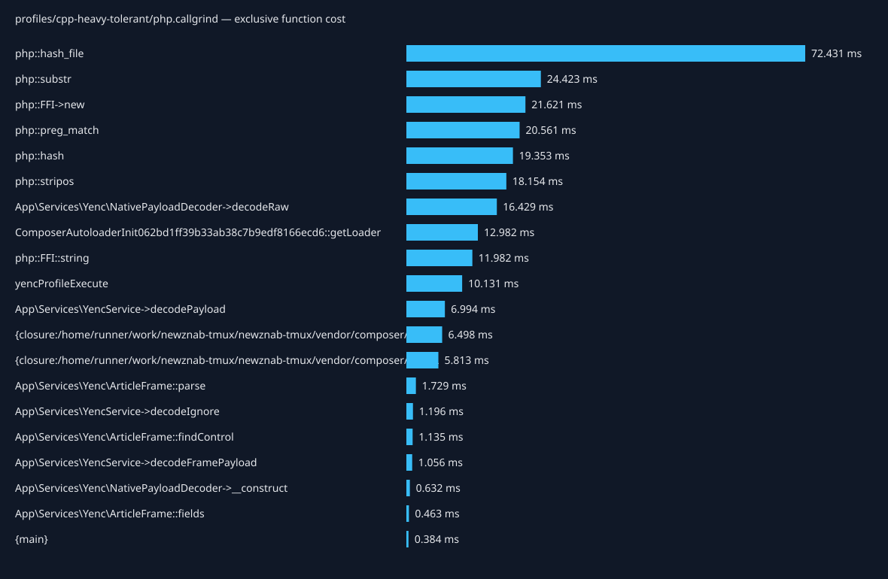
| Caller → callee | Calls | Inclusive cost (ms) |
|---|---|---|
| {main} → yencProfileExecute | 1 | 156.683 |
| yencProfileExecute → App\Services\YencService->decodeIgnore | 101 | 126.882 |
| App\Services\YencService->decodeIgnore → App\Services\YencService->decodeFramePayload | 101 | 103.375 |
| App\Services\YencService->decodeFramePayload → App\Services\YencService->decodePayload | 101 | 77.519 |
| {main} → php::hash_file | 14 | 72.431 |
| App\Services\YencService->decodePayload → App\Services\Yenc\NativePayloadDecoder->decodeRaw | 101 | 50.031 |
| App\Services\YencService->decodeFramePayload → App\Services\YencService->payloadSlice | 101 | 24.657 |
| App\Services\YencService->payloadSlice → php::substr | 101 | 24.383 |
| {main} → require::/home/runner/work/newznab-tmux/newznab-tmux/vendor/autoload.php | 1 | 22.189 |
| App\Services\YencService->decodeIgnore → App\Services\Yenc\ArticleFrame::parse | 101 | 22.111 |
| require::/home/runner/work/newznab-tmux/newznab-tmux/vendor/autoload.php → ComposerAutoloaderInit062bd1ff39b33ab38c7b9edf8166ecd6::getLoader | 1 | 22.078 |
| App\Services\Yenc\NativePayloadDecoder->decodeRaw → php::FFI->new | 102 | 21.621 |
| App\Services\YencService->decodePayload → php::preg_match | 101 | 20.466 |
| App\Services\Yenc\ArticleFrame::parse → App\Services\Yenc\ArticleFrame::findControl | 303 | 19.427 |
| App\Services\Yenc\ArticleFrame::findControl → php::stripos | 202 | 18.154 |
| App\Services\Yenc\NativePayloadDecoder->decodeRaw → php::FFI::string | 102 | 11.982 |
| yencProfileExecute → yencProfileLoadFixture | 1 | 9.993 |
| yencProfileExecute → php::hash | 2 | 9.677 |
| yencProfileLoadFixture → php::hash | 2 | 9.676 |
| ComposerAutoloaderInit062bd1ff39b33ab38c7b9edf8166ecd6::getLoader → {closure:/home/runner/work/newznab-tmux/newznab-tmux/vendor/composer/autoload_real.php:37-43} | 51 | 8.816 |
| Composer\Autoload\ClassLoader->loadClass → {closure:/home/runner/work/newznab-tmux/newznab-tmux/vendor/composer/ClassLoader.php:575-577} | 23 | 7.971 |
| {main} → php::ReflectionClass->__construct | 9 | 4.251 |
| php::ReflectionClass->__construct → Composer\Autoload\ClassLoader->loadClass | 5 | 4.231 |
| {main} → App\Services\Yenc\DecoderFactory->make | 1 | 1.311 |
| {closure:/home/runner/work/newznab-tmux/newznab-tmux/vendor/composer/ClassLoader.php:575-577} → include::/home/runner/work/newznab-tmux/newznab-tmux/app/Services/NNTP/NNTPService.php | 1 | 1.152 |
| include::/home/runner/work/newznab-tmux/newznab-tmux/app/Services/NNTP/NNTPService.php → Composer\Autoload\ClassLoader->loadClass | 1 | 1.143 |
| App\Services\Yenc\DecoderFactory->make → App\Services\Yenc\NativePayloadDecoder->__construct | 1 | 0.998 |
| App\Services\Yenc\ArticleFrame::parse → App\Services\Yenc\ArticleFrame::fields | 101 | 0.810 |
| {closure:/home/runner/work/newznab-tmux/newznab-tmux/vendor/composer/ClassLoader.php:575-577} → include::/home/runner/work/newznab-tmux/newznab-tmux/vendor/dariusiii/net_nntp/src/Client.php | 1 | 0.784 |
| include::/home/runner/work/newznab-tmux/newznab-tmux/vendor/dariusiii/net_nntp/src/Client.php → Composer\Autoload\ClassLoader->loadClass | 1 | 0.773 |
Total exclusive profiled cost: 964.468 ms.
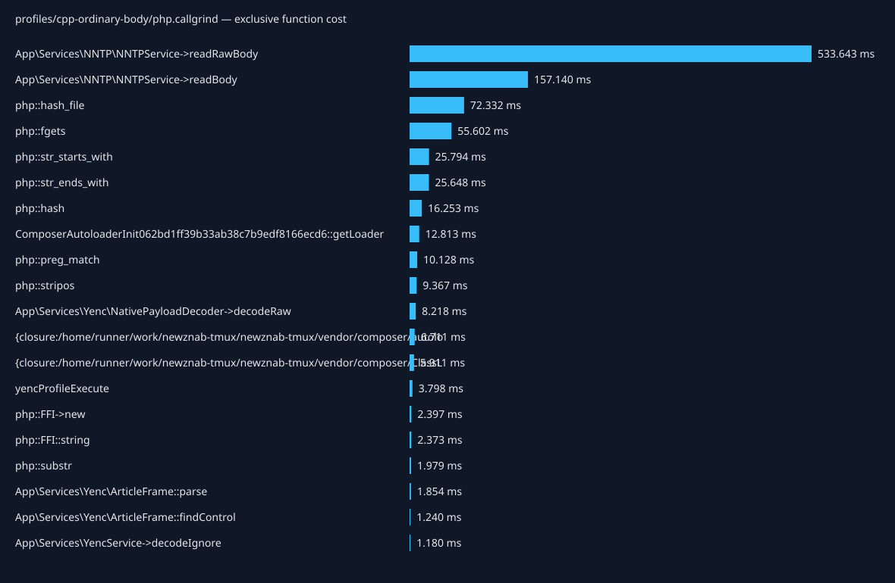
| Caller → callee | Calls | Inclusive cost (ms) |
|---|---|---|
| {main} → yencProfileExecute | 1 | 865.393 |
| yencProfileExecute → Tests\Support\YencNntpHarness->fetch | 101 | 841.991 |
| Tests\Support\YencNntpHarness->fetch → App\Services\NNTP\NNTPService->_getMessageByMessageID | 101 | 841.516 |
| App\Services\NNTP\NNTPService->_getMessageByMessageID → App\Services\NNTP\NNTPService->readBody | 101 | 839.623 |
| App\Services\NNTP\NNTPService->readBody → App\Services\NNTP\NNTPService->readRawBody | 101 | 639.806 |
| {main} → php::hash_file | 14 | 72.332 |
| App\Services\NNTP\NNTPService->readRawBody → php::fgets | 420463 | 55.602 |
| App\Services\NNTP\NNTPService->readBody → App\Services\YencService->decodeIgnore | 101 | 42.648 |
| App\Services\YencService->decodeIgnore → App\Services\YencService->decodeFramePayload | 101 | 27.249 |
| App\Services\NNTP\NNTPService->readRawBody → php::str_starts_with | 420362 | 25.794 |
| App\Services\NNTP\NNTPService->readRawBody → php::str_ends_with | 420463 | 25.629 |
| App\Services\YencService->decodeFramePayload → App\Services\YencService->decodePayload | 101 | 23.941 |
| {main} → require::/home/runner/work/newznab-tmux/newznab-tmux/vendor/autoload.php | 1 | 22.017 |
| require::/home/runner/work/newznab-tmux/newznab-tmux/vendor/autoload.php → ComposerAutoloaderInit062bd1ff39b33ab38c7b9edf8166ecd6::getLoader | 1 | 21.928 |
| App\Services\YencService->decodeIgnore → App\Services\Yenc\ArticleFrame::parse | 101 | 14.042 |
| App\Services\YencService->decodePayload → App\Services\Yenc\NativePayloadDecoder->decodeRaw | 101 | 12.983 |
| App\Services\Yenc\ArticleFrame::parse → App\Services\Yenc\ArticleFrame::findControl | 303 | 10.778 |
| Composer\Autoload\ClassLoader->loadClass → {closure:/home/runner/work/newznab-tmux/newznab-tmux/vendor/composer/ClassLoader.php:575-577} | 25 | 10.570 |
| App\Services\YencService->decodePayload → php::preg_match | 101 | 10.035 |
| yencProfileExecute → php::hash | 3 | 9.760 |
| App\Services\Yenc\ArticleFrame::findControl → php::stripos | 202 | 9.367 |
| ComposerAutoloaderInit062bd1ff39b33ab38c7b9edf8166ecd6::getLoader → {closure:/home/runner/work/newznab-tmux/newznab-tmux/vendor/composer/autoload_real.php:37-43} | 51 | 8.842 |
| yencProfileExecute → yencProfileLoadFixture | 1 | 6.739 |
| yencProfileLoadFixture → php::hash | 2 | 6.493 |
| yencProfileExecute → Composer\Autoload\ClassLoader->loadClass | 1 | 2.651 |
| {closure:/home/runner/work/newznab-tmux/newznab-tmux/vendor/composer/ClassLoader.php:575-577} → include::/home/runner/work/newznab-tmux/newznab-tmux/tests/Support/YencNntpHarness.php | 1 | 2.552 |
| include::/home/runner/work/newznab-tmux/newznab-tmux/tests/Support/YencNntpHarness.php → Composer\Autoload\ClassLoader->loadClass | 1 | 2.545 |
| App\Services\Yenc\NativePayloadDecoder->decodeRaw → php::FFI->new | 102 | 2.397 |
| App\Services\Yenc\NativePayloadDecoder->decodeRaw → php::FFI::string | 102 | 2.373 |
| App\Services\YencService->decodeFramePayload → App\Services\YencService->payloadSlice | 101 | 2.103 |
Total exclusive profiled cost: 162.180 ms.
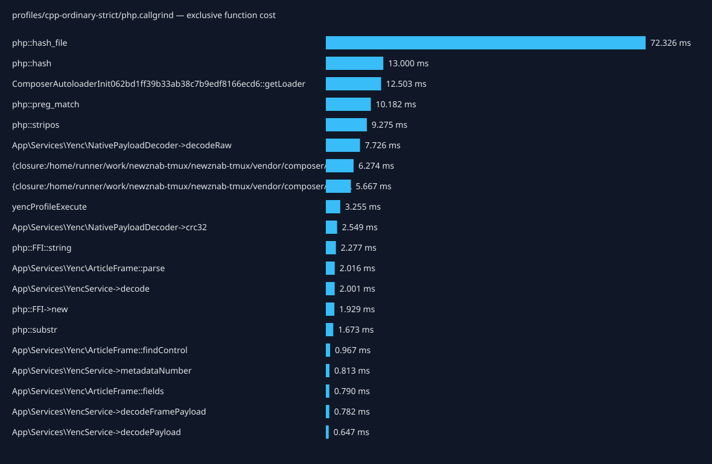
| Caller → callee | Calls | Inclusive cost (ms) |
|---|---|---|
| {main} → php::hash_file | 14 | 72.326 |
| {main} → yencProfileExecute | 1 | 62.211 |
| yencProfileExecute → App\Services\YencService->decode | 101 | 45.720 |
| App\Services\YencService->decode → App\Services\YencService->decodeFramePayload | 101 | 25.290 |
| App\Services\YencService->decodeFramePayload → App\Services\YencService->decodePayload | 101 | 22.599 |
| {main} → require::/home/runner/work/newznab-tmux/newznab-tmux/vendor/autoload.php | 1 | 21.235 |
| require::/home/runner/work/newznab-tmux/newznab-tmux/vendor/autoload.php → ComposerAutoloaderInit062bd1ff39b33ab38c7b9edf8166ecd6::getLoader | 1 | 21.147 |
| App\Services\YencService->decode → App\Services\Yenc\ArticleFrame::parse | 101 | 13.811 |
| App\Services\YencService->decodePayload → App\Services\Yenc\NativePayloadDecoder->decodeRaw | 101 | 11.928 |
| App\Services\Yenc\ArticleFrame::parse → App\Services\Yenc\ArticleFrame::findControl | 303 | 10.350 |
| App\Services\YencService->decodePayload → php::preg_match | 101 | 10.003 |
| App\Services\Yenc\ArticleFrame::findControl → php::stripos | 202 | 9.275 |
| ComposerAutoloaderInit062bd1ff39b33ab38c7b9edf8166ecd6::getLoader → {closure:/home/runner/work/newznab-tmux/newznab-tmux/vendor/composer/autoload_real.php:37-43} | 51 | 8.369 |
| Composer\Autoload\ClassLoader->loadClass → {closure:/home/runner/work/newznab-tmux/newznab-tmux/vendor/composer/ClassLoader.php:575-577} | 23 | 7.779 |
| yencProfileExecute → yencProfileLoadFixture | 1 | 6.776 |
| yencProfileLoadFixture → php::hash | 2 | 6.539 |
| yencProfileExecute → php::hash | 2 | 6.461 |
| {main} → php::ReflectionClass->__construct | 9 | 4.153 |
| php::ReflectionClass->__construct → Composer\Autoload\ClassLoader->loadClass | 5 | 4.135 |
| App\Services\YencService->decode → App\Services\YencService->crc32 | 101 | 2.799 |
| App\Services\YencService->crc32 → App\Services\Yenc\NativePayloadDecoder->crc32 | 101 | 2.575 |
| App\Services\Yenc\NativePayloadDecoder->decodeRaw → php::FFI::string | 102 | 2.277 |
| App\Services\Yenc\NativePayloadDecoder->decodeRaw → php::FFI->new | 102 | 1.929 |
| App\Services\YencService->decodeFramePayload → App\Services\YencService->payloadSlice | 101 | 1.775 |
| App\Services\YencService->payloadSlice → php::substr | 101 | 1.636 |
| App\Services\YencService->decode → App\Services\YencService->number | 202 | 1.496 |
| App\Services\Yenc\ArticleFrame::parse → App\Services\Yenc\ArticleFrame::fields | 202 | 1.290 |
| {main} → App\Services\Yenc\DecoderFactory->make | 1 | 1.249 |
| {closure:/home/runner/work/newznab-tmux/newznab-tmux/vendor/composer/ClassLoader.php:575-577} → include::/home/runner/work/newznab-tmux/newznab-tmux/app/Services/NNTP/NNTPService.php | 1 | 1.135 |
| include::/home/runner/work/newznab-tmux/newznab-tmux/app/Services/NNTP/NNTPService.php → Composer\Autoload\ClassLoader->loadClass | 1 | 1.126 |
Total exclusive profiled cost: 156.833 ms.
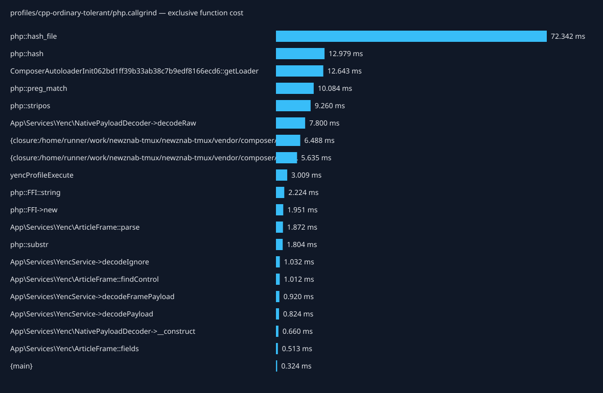
| Caller → callee | Calls | Inclusive cost (ms) |
|---|---|---|
| {main} → php::hash_file | 14 | 72.342 |
| {main} → yencProfileExecute | 1 | 56.435 |
| yencProfileExecute → App\Services\YencService->decodeIgnore | 101 | 40.209 |
| App\Services\YencService->decodeIgnore → App\Services\YencService->decodeFramePayload | 101 | 25.795 |
| App\Services\YencService->decodeFramePayload → App\Services\YencService->decodePayload | 101 | 22.832 |
| {main} → require::/home/runner/work/newznab-tmux/newznab-tmux/vendor/autoload.php | 1 | 21.605 |
| require::/home/runner/work/newznab-tmux/newznab-tmux/vendor/autoload.php → ComposerAutoloaderInit062bd1ff39b33ab38c7b9edf8166ecd6::getLoader | 1 | 21.519 |
| App\Services\YencService->decodeIgnore → App\Services\Yenc\ArticleFrame::parse | 101 | 13.211 |
| App\Services\YencService->decodePayload → App\Services\Yenc\NativePayloadDecoder->decodeRaw | 101 | 11.967 |
| App\Services\Yenc\ArticleFrame::parse → App\Services\Yenc\ArticleFrame::findControl | 303 | 10.388 |
| App\Services\YencService->decodePayload → php::preg_match | 101 | 9.967 |
| App\Services\Yenc\ArticleFrame::findControl → php::stripos | 202 | 9.260 |
| ComposerAutoloaderInit062bd1ff39b33ab38c7b9edf8166ecd6::getLoader → {closure:/home/runner/work/newznab-tmux/newznab-tmux/vendor/composer/autoload_real.php:37-43} | 51 | 8.600 |
| Composer\Autoload\ClassLoader->loadClass → {closure:/home/runner/work/newznab-tmux/newznab-tmux/vendor/composer/ClassLoader.php:575-577} | 23 | 7.798 |
| yencProfileExecute → yencProfileLoadFixture | 1 | 6.749 |
| yencProfileLoadFixture → php::hash | 2 | 6.511 |
| yencProfileExecute → php::hash | 2 | 6.468 |
| {main} → php::ReflectionClass->__construct | 9 | 4.150 |
| php::ReflectionClass->__construct → Composer\Autoload\ClassLoader->loadClass | 5 | 4.132 |
| App\Services\Yenc\NativePayloadDecoder->decodeRaw → php::FFI::string | 102 | 2.224 |
| App\Services\Yenc\NativePayloadDecoder->decodeRaw → php::FFI->new | 102 | 1.951 |
| App\Services\YencService->decodeFramePayload → App\Services\YencService->payloadSlice | 101 | 1.914 |
| App\Services\YencService->payloadSlice → php::substr | 101 | 1.770 |
| {main} → App\Services\Yenc\DecoderFactory->make | 1 | 1.282 |
| {closure:/home/runner/work/newznab-tmux/newznab-tmux/vendor/composer/ClassLoader.php:575-577} → include::/home/runner/work/newznab-tmux/newznab-tmux/app/Services/NNTP/NNTPService.php | 1 | 1.177 |
| include::/home/runner/work/newznab-tmux/newznab-tmux/app/Services/NNTP/NNTPService.php → Composer\Autoload\ClassLoader->loadClass | 1 | 1.168 |
| App\Services\Yenc\DecoderFactory->make → App\Services\Yenc\NativePayloadDecoder->__construct | 1 | 0.966 |
| App\Services\Yenc\ArticleFrame::parse → App\Services\Yenc\ArticleFrame::fields | 101 | 0.821 |
| {closure:/home/runner/work/newznab-tmux/newznab-tmux/vendor/composer/ClassLoader.php:575-577} → include::/home/runner/work/newznab-tmux/newznab-tmux/vendor/dariusiii/net_nntp/src/Client.php | 1 | 0.778 |
| include::/home/runner/work/newznab-tmux/newznab-tmux/vendor/dariusiii/net_nntp/src/Client.php → Composer\Autoload\ClassLoader->loadClass | 1 | 0.767 |
Total exclusive profiled cost: 1954.888 ms.
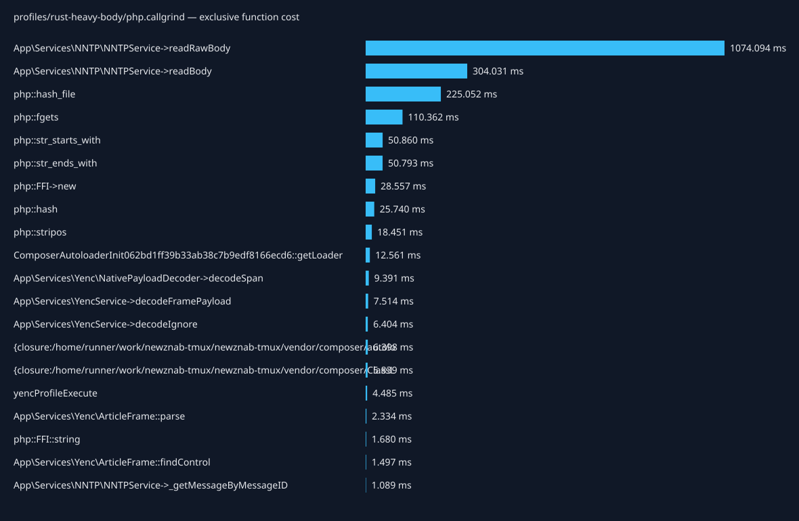
| Caller → callee | Calls | Inclusive cost (ms) |
|---|---|---|
| {main} → yencProfileExecute | 1 | 1701.168 |
| yencProfileExecute → Tests\Support\YencNntpHarness->fetch | 101 | 1667.523 |
| Tests\Support\YencNntpHarness->fetch → App\Services\NNTP\NNTPService->_getMessageByMessageID | 101 | 1666.935 |
| App\Services\NNTP\NNTPService->_getMessageByMessageID → App\Services\NNTP\NNTPService->readBody | 101 | 1664.901 |
| App\Services\NNTP\NNTPService->readBody → App\Services\NNTP\NNTPService->readRawBody | 101 | 1282.421 |
| {main} → php::hash_file | 14 | 225.052 |
| App\Services\NNTP\NNTPService->readRawBody → php::fgets | 827695 | 110.362 |
| App\Services\NNTP\NNTPService->readBody → App\Services\YencService->decodeIgnore | 101 | 78.417 |
| App\Services\NNTP\NNTPService->readRawBody → php::str_starts_with | 827594 | 50.859 |
| App\Services\NNTP\NNTPService->readRawBody → php::str_ends_with | 827695 | 50.777 |
| App\Services\YencService->decodeIgnore → App\Services\YencService->decodeFramePayload | 101 | 47.458 |
| App\Services\YencService->decodeFramePayload → App\Services\Yenc\NativePayloadDecoder->decodeSpan | 101 | 39.633 |
| App\Services\Yenc\NativePayloadDecoder->decodeSpan → php::FFI->new | 101 | 28.552 |
| App\Services\YencService->decodeIgnore → App\Services\Yenc\ArticleFrame::parse | 101 | 24.367 |
| {main} → require::/home/runner/work/newznab-tmux/newznab-tmux/vendor/autoload.php | 1 | 21.436 |
| require::/home/runner/work/newznab-tmux/newznab-tmux/vendor/autoload.php → ComposerAutoloaderInit062bd1ff39b33ab38c7b9edf8166ecd6::getLoader | 1 | 21.349 |
| App\Services\Yenc\ArticleFrame::parse → App\Services\Yenc\ArticleFrame::findControl | 303 | 20.184 |
| App\Services\Yenc\ArticleFrame::findControl → php::stripos | 202 | 18.451 |
| yencProfileExecute → php::hash | 3 | 16.090 |
| Composer\Autoload\ClassLoader->loadClass → {closure:/home/runner/work/newznab-tmux/newznab-tmux/vendor/composer/ClassLoader.php:575-577} | 25 | 10.314 |
| yencProfileExecute → yencProfileLoadFixture | 1 | 9.920 |
| yencProfileLoadFixture → php::hash | 2 | 9.650 |
| ComposerAutoloaderInit062bd1ff39b33ab38c7b9edf8166ecd6::getLoader → {closure:/home/runner/work/newznab-tmux/newznab-tmux/vendor/composer/autoload_real.php:37-43} | 51 | 8.515 |
| yencProfileExecute → Composer\Autoload\ClassLoader->loadClass | 1 | 2.555 |
| {closure:/home/runner/work/newznab-tmux/newznab-tmux/vendor/composer/ClassLoader.php:575-577} → include::/home/runner/work/newznab-tmux/newznab-tmux/tests/Support/YencNntpHarness.php | 1 | 2.450 |
| include::/home/runner/work/newznab-tmux/newznab-tmux/tests/Support/YencNntpHarness.php → Composer\Autoload\ClassLoader->loadClass | 1 | 2.444 |
| App\Services\Yenc\NativePayloadDecoder->decodeSpan → php::FFI::string | 101 | 1.679 |
| {main} → php::ReflectionClass->__construct | 9 | 1.600 |
| php::ReflectionClass->__construct → Composer\Autoload\ClassLoader->loadClass | 3 | 1.584 |
| App\Services\Yenc\ArticleFrame::parse → App\Services\Yenc\ArticleFrame::fields | 101 | 1.541 |
Total exclusive profiled cost: 317.517 ms.
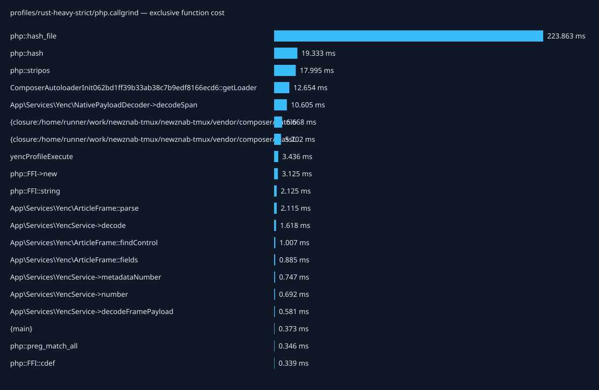
| Caller → callee | Calls | Inclusive cost (ms) |
|---|---|---|
| {main} → php::hash_file | 14 | 223.863 |
| {main} → yencProfileExecute | 1 | 65.773 |
| yencProfileExecute → App\Services\YencService->decode | 101 | 42.739 |
| App\Services\YencService->decode → App\Services\Yenc\ArticleFrame::parse | 101 | 22.688 |
| {main} → require::/home/runner/work/newznab-tmux/newznab-tmux/vendor/autoload.php | 1 | 21.856 |
| require::/home/runner/work/newznab-tmux/newznab-tmux/vendor/autoload.php → ComposerAutoloaderInit062bd1ff39b33ab38c7b9edf8166ecd6::getLoader | 1 | 21.753 |
| App\Services\Yenc\ArticleFrame::parse → App\Services\Yenc\ArticleFrame::findControl | 303 | 19.112 |
| App\Services\Yenc\ArticleFrame::findControl → php::stripos | 202 | 17.995 |
| App\Services\YencService->decode → App\Services\YencService->decodeFramePayload | 101 | 16.581 |
| App\Services\YencService->decodeFramePayload → App\Services\Yenc\NativePayloadDecoder->decodeSpan | 101 | 15.890 |
| yencProfileExecute → yencProfileLoadFixture | 1 | 9.942 |
| yencProfileLoadFixture → php::hash | 2 | 9.676 |
| yencProfileExecute → php::hash | 2 | 9.656 |
| ComposerAutoloaderInit062bd1ff39b33ab38c7b9edf8166ecd6::getLoader → {closure:/home/runner/work/newznab-tmux/newznab-tmux/vendor/composer/autoload_real.php:37-43} | 51 | 8.817 |
| Composer\Autoload\ClassLoader->loadClass → {closure:/home/runner/work/newznab-tmux/newznab-tmux/vendor/composer/ClassLoader.php:575-577} | 23 | 7.852 |
| {main} → php::ReflectionClass->__construct | 9 | 4.187 |
| php::ReflectionClass->__construct → Composer\Autoload\ClassLoader->loadClass | 5 | 4.166 |
| App\Services\Yenc\NativePayloadDecoder->decodeSpan → php::FFI->new | 102 | 3.119 |
| App\Services\Yenc\NativePayloadDecoder->decodeSpan → php::FFI::string | 101 | 2.124 |
| App\Services\YencService->decode → App\Services\YencService->number | 202 | 1.542 |
| App\Services\Yenc\ArticleFrame::parse → App\Services\Yenc\ArticleFrame::fields | 202 | 1.306 |
| {closure:/home/runner/work/newznab-tmux/newznab-tmux/vendor/composer/ClassLoader.php:575-577} → include::/home/runner/work/newznab-tmux/newznab-tmux/app/Services/NNTP/NNTPService.php | 1 | 1.162 |
| include::/home/runner/work/newznab-tmux/newznab-tmux/app/Services/NNTP/NNTPService.php → Composer\Autoload\ClassLoader->loadClass | 1 | 1.152 |
| App\Services\YencService->number → App\Services\YencService->metadataNumber | 202 | 0.850 |
| {main} → App\Services\Yenc\DecoderFactory->make | 1 | 0.807 |
| {closure:/home/runner/work/newznab-tmux/newznab-tmux/vendor/composer/ClassLoader.php:575-577} → include::/home/runner/work/newznab-tmux/newznab-tmux/vendor/dariusiii/net_nntp/src/Client.php | 1 | 0.772 |
| include::/home/runner/work/newznab-tmux/newznab-tmux/vendor/dariusiii/net_nntp/src/Client.php → Composer\Autoload\ClassLoader->loadClass | 1 | 0.742 |
| {closure:/home/runner/work/newznab-tmux/newznab-tmux/vendor/composer/autoload_real.php:37-43} → require::/home/runner/work/newznab-tmux/newznab-tmux/vendor/nunomaduro/collision/src/Adapters/Phpunit/Autoload.php | 1 | 0.543 |
| App\Services\Yenc\DecoderFactory->make → App\Services\Yenc\NativePayloadDecoder->__construct | 1 | 0.479 |
| {main} → Composer\Autoload\ClassLoader->loadClass | 2 | 0.436 |
Total exclusive profiled cost: 311.980 ms.
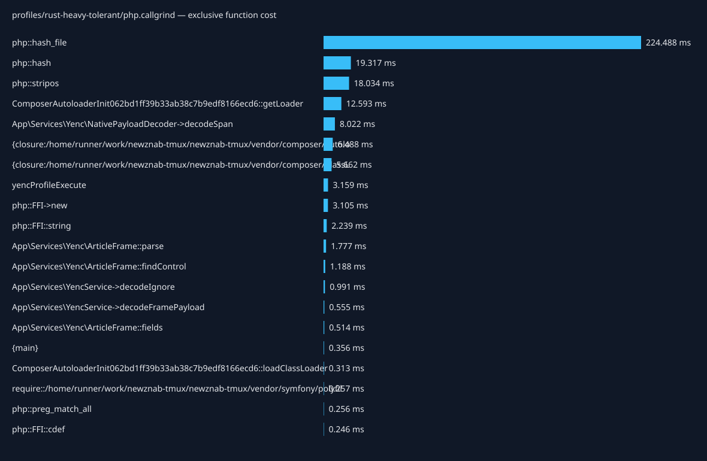
| Caller → callee | Calls | Inclusive cost (ms) |
|---|---|---|
| {main} → php::hash_file | 14 | 224.488 |
| {main} → yencProfileExecute | 1 | 59.982 |
| yencProfileExecute → App\Services\YencService->decodeIgnore | 101 | 37.264 |
| App\Services\YencService->decodeIgnore → App\Services\Yenc\ArticleFrame::parse | 101 | 22.073 |
| {main} → require::/home/runner/work/newznab-tmux/newznab-tmux/vendor/autoload.php | 1 | 21.611 |
| require::/home/runner/work/newznab-tmux/newznab-tmux/vendor/autoload.php → ComposerAutoloaderInit062bd1ff39b33ab38c7b9edf8166ecd6::getLoader | 1 | 21.526 |
| App\Services\Yenc\ArticleFrame::parse → App\Services\Yenc\ArticleFrame::findControl | 303 | 19.342 |
| App\Services\Yenc\ArticleFrame::findControl → php::stripos | 202 | 18.034 |
| App\Services\YencService->decodeIgnore → App\Services\YencService->decodeFramePayload | 101 | 14.030 |
| App\Services\YencService->decodeFramePayload → App\Services\Yenc\NativePayloadDecoder->decodeSpan | 101 | 13.367 |
| yencProfileExecute → yencProfileLoadFixture | 1 | 9.922 |
| yencProfileLoadFixture → php::hash | 2 | 9.680 |
| yencProfileExecute → php::hash | 2 | 9.637 |
| ComposerAutoloaderInit062bd1ff39b33ab38c7b9edf8166ecd6::getLoader → {closure:/home/runner/work/newznab-tmux/newznab-tmux/vendor/composer/autoload_real.php:37-43} | 51 | 8.581 |
| Composer\Autoload\ClassLoader->loadClass → {closure:/home/runner/work/newznab-tmux/newznab-tmux/vendor/composer/ClassLoader.php:575-577} | 23 | 7.858 |
| {main} → php::ReflectionClass->__construct | 9 | 4.212 |
| php::ReflectionClass->__construct → Composer\Autoload\ClassLoader->loadClass | 5 | 4.192 |
| App\Services\Yenc\NativePayloadDecoder->decodeSpan → php::FFI->new | 101 | 3.100 |
| App\Services\Yenc\NativePayloadDecoder->decodeSpan → php::FFI::string | 101 | 2.238 |
| {closure:/home/runner/work/newznab-tmux/newznab-tmux/vendor/composer/ClassLoader.php:575-577} → include::/home/runner/work/newznab-tmux/newznab-tmux/app/Services/NNTP/NNTPService.php | 1 | 1.161 |
| include::/home/runner/work/newznab-tmux/newznab-tmux/app/Services/NNTP/NNTPService.php → Composer\Autoload\ClassLoader->loadClass | 1 | 1.152 |
| App\Services\Yenc\ArticleFrame::parse → App\Services\Yenc\ArticleFrame::fields | 101 | 0.820 |
| {closure:/home/runner/work/newznab-tmux/newznab-tmux/vendor/composer/ClassLoader.php:575-577} → include::/home/runner/work/newznab-tmux/newznab-tmux/vendor/dariusiii/net_nntp/src/Client.php | 1 | 0.796 |
| include::/home/runner/work/newznab-tmux/newznab-tmux/vendor/dariusiii/net_nntp/src/Client.php → Composer\Autoload\ClassLoader->loadClass | 1 | 0.786 |
| {main} → App\Services\Yenc\DecoderFactory->make | 1 | 0.724 |
| {closure:/home/runner/work/newznab-tmux/newznab-tmux/vendor/composer/autoload_real.php:37-43} → require::/home/runner/work/newznab-tmux/newznab-tmux/vendor/nunomaduro/collision/src/Adapters/Phpunit/Autoload.php | 1 | 0.518 |
| {main} → Composer\Autoload\ClassLoader->loadClass | 2 | 0.387 |
| App\Services\Yenc\DecoderFactory->make → App\Services\Yenc\NativePayloadDecoder->__construct | 1 | 0.381 |
| App\Services\Yenc\DecoderFactory->make → Composer\Autoload\ClassLoader->loadClass | 1 | 0.326 |
| require::/home/runner/work/newznab-tmux/newznab-tmux/vendor/nunomaduro/collision/src/Adapters/Phpunit/Autoload.php → Composer\Autoload\ClassLoader->loadClass | 1 | 0.321 |
Total exclusive profiled cost: 1104.252 ms.
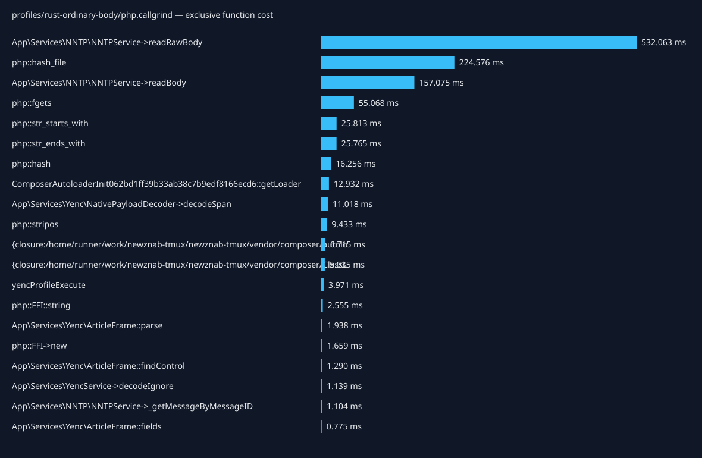
| Caller → callee | Calls | Inclusive cost (ms) |
|---|---|---|
| {main} → yencProfileExecute | 1 | 852.213 |
| yencProfileExecute → Tests\Support\YencNntpHarness->fetch | 101 | 828.566 |
| Tests\Support\YencNntpHarness->fetch → App\Services\NNTP\NNTPService->_getMessageByMessageID | 101 | 828.006 |
| App\Services\NNTP\NNTPService->_getMessageByMessageID → App\Services\NNTP\NNTPService->readBody | 101 | 826.036 |
| App\Services\NNTP\NNTPService->readBody → App\Services\NNTP\NNTPService->readRawBody | 101 | 636.916 |
| {main} → php::hash_file | 14 | 224.576 |
| App\Services\NNTP\NNTPService->readRawBody → php::fgets | 420463 | 55.068 |
| App\Services\NNTP\NNTPService->readBody → App\Services\YencService->decodeIgnore | 101 | 32.017 |
| App\Services\NNTP\NNTPService->readRawBody → php::str_starts_with | 420362 | 25.812 |
| App\Services\NNTP\NNTPService->readRawBody → php::str_ends_with | 420463 | 25.740 |
| {main} → require::/home/runner/work/newznab-tmux/newznab-tmux/vendor/autoload.php | 1 | 22.258 |
| require::/home/runner/work/newznab-tmux/newznab-tmux/vendor/autoload.php → ComposerAutoloaderInit062bd1ff39b33ab38c7b9edf8166ecd6::getLoader | 1 | 22.167 |
| App\Services\YencService->decodeIgnore → App\Services\YencService->decodeFramePayload | 101 | 16.161 |
| App\Services\YencService->decodeFramePayload → App\Services\Yenc\NativePayloadDecoder->decodeSpan | 101 | 15.250 |
| App\Services\YencService->decodeIgnore → App\Services\Yenc\ArticleFrame::parse | 101 | 14.494 |
| App\Services\Yenc\ArticleFrame::parse → App\Services\Yenc\ArticleFrame::findControl | 303 | 10.915 |
| Composer\Autoload\ClassLoader->loadClass → {closure:/home/runner/work/newznab-tmux/newznab-tmux/vendor/composer/ClassLoader.php:575-577} | 25 | 10.668 |
| yencProfileExecute → php::hash | 3 | 9.754 |
| App\Services\Yenc\ArticleFrame::findControl → php::stripos | 202 | 9.433 |
| ComposerAutoloaderInit062bd1ff39b33ab38c7b9edf8166ecd6::getLoader → {closure:/home/runner/work/newznab-tmux/newznab-tmux/vendor/composer/autoload_real.php:37-43} | 51 | 8.834 |
| yencProfileExecute → yencProfileLoadFixture | 1 | 6.719 |
| yencProfileLoadFixture → php::hash | 2 | 6.503 |
| yencProfileExecute → Composer\Autoload\ClassLoader->loadClass | 1 | 2.748 |
| {closure:/home/runner/work/newznab-tmux/newznab-tmux/vendor/composer/ClassLoader.php:575-577} → include::/home/runner/work/newznab-tmux/newznab-tmux/tests/Support/YencNntpHarness.php | 1 | 2.612 |
| include::/home/runner/work/newznab-tmux/newznab-tmux/tests/Support/YencNntpHarness.php → Composer\Autoload\ClassLoader->loadClass | 1 | 2.605 |
| App\Services\Yenc\NativePayloadDecoder->decodeSpan → php::FFI::string | 101 | 2.554 |
| App\Services\Yenc\NativePayloadDecoder->decodeSpan → php::FFI->new | 101 | 1.653 |
| {main} → php::ReflectionClass->__construct | 9 | 1.563 |
| php::ReflectionClass->__construct → Composer\Autoload\ClassLoader->loadClass | 3 | 1.547 |
| App\Services\Yenc\ArticleFrame::parse → App\Services\Yenc\ArticleFrame::fields | 101 | 1.407 |
Total exclusive profiled cost: 303.454 ms.
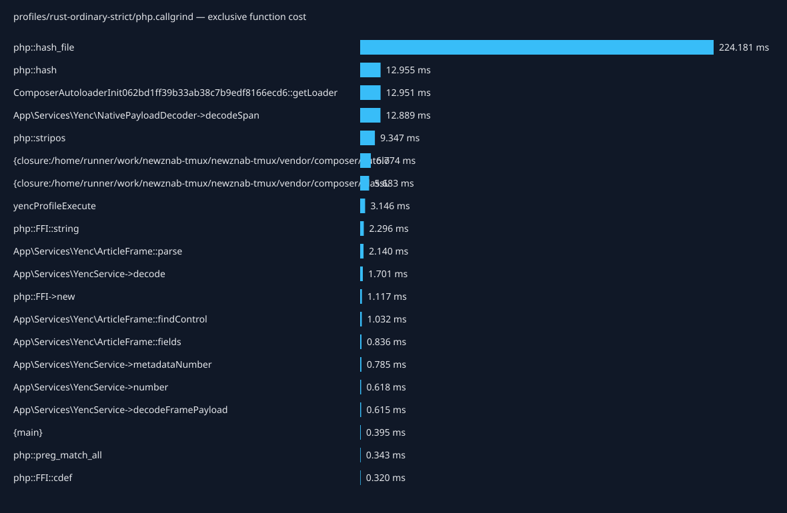
| Caller → callee | Calls | Inclusive cost (ms) |
|---|---|---|
| {main} → php::hash_file | 14 | 224.181 |
| {main} → yencProfileExecute | 1 | 50.921 |
| yencProfileExecute → App\Services\YencService->decode | 101 | 34.613 |
| {main} → require::/home/runner/work/newznab-tmux/newznab-tmux/vendor/autoload.php | 1 | 22.269 |
| require::/home/runner/work/newznab-tmux/newznab-tmux/vendor/autoload.php → ComposerAutoloaderInit062bd1ff39b33ab38c7b9edf8166ecd6::getLoader | 1 | 22.176 |
| App\Services\YencService->decode → App\Services\YencService->decodeFramePayload | 101 | 17.063 |
| App\Services\YencService->decodeFramePayload → App\Services\Yenc\NativePayloadDecoder->decodeSpan | 101 | 16.340 |
| App\Services\YencService->decode → App\Services\Yenc\ArticleFrame::parse | 101 | 14.043 |
| App\Services\Yenc\ArticleFrame::parse → App\Services\Yenc\ArticleFrame::findControl | 303 | 10.489 |
| App\Services\Yenc\ArticleFrame::findControl → php::stripos | 202 | 9.347 |
| ComposerAutoloaderInit062bd1ff39b33ab38c7b9edf8166ecd6::getLoader → {closure:/home/runner/work/newznab-tmux/newznab-tmux/vendor/composer/autoload_real.php:37-43} | 51 | 8.937 |
| Composer\Autoload\ClassLoader->loadClass → {closure:/home/runner/work/newznab-tmux/newznab-tmux/vendor/composer/ClassLoader.php:575-577} | 23 | 7.889 |
| yencProfileExecute → yencProfileLoadFixture | 1 | 6.695 |
| yencProfileLoadFixture → php::hash | 2 | 6.488 |
| yencProfileExecute → php::hash | 2 | 6.467 |
| {main} → php::ReflectionClass->__construct | 9 | 4.260 |
| php::ReflectionClass->__construct → Composer\Autoload\ClassLoader->loadClass | 5 | 4.240 |
| App\Services\Yenc\NativePayloadDecoder->decodeSpan → php::FFI::string | 101 | 2.296 |
| App\Services\YencService->decode → App\Services\YencService->number | 202 | 1.512 |
| App\Services\Yenc\ArticleFrame::parse → App\Services\Yenc\ArticleFrame::fields | 202 | 1.254 |
| {closure:/home/runner/work/newznab-tmux/newznab-tmux/vendor/composer/ClassLoader.php:575-577} → include::/home/runner/work/newznab-tmux/newznab-tmux/app/Services/NNTP/NNTPService.php | 1 | 1.168 |
| include::/home/runner/work/newznab-tmux/newznab-tmux/app/Services/NNTP/NNTPService.php → Composer\Autoload\ClassLoader->loadClass | 1 | 1.158 |
| App\Services\Yenc\NativePayloadDecoder->decodeSpan → php::FFI->new | 102 | 1.111 |
| App\Services\YencService->number → App\Services\YencService->metadataNumber | 202 | 0.894 |
| {main} → App\Services\Yenc\DecoderFactory->make | 1 | 0.807 |
| {closure:/home/runner/work/newznab-tmux/newznab-tmux/vendor/composer/ClassLoader.php:575-577} → include::/home/runner/work/newznab-tmux/newznab-tmux/vendor/dariusiii/net_nntp/src/Client.php | 1 | 0.792 |
| include::/home/runner/work/newznab-tmux/newznab-tmux/vendor/dariusiii/net_nntp/src/Client.php → Composer\Autoload\ClassLoader->loadClass | 1 | 0.782 |
| {closure:/home/runner/work/newznab-tmux/newznab-tmux/vendor/composer/autoload_real.php:37-43} → require::/home/runner/work/newznab-tmux/newznab-tmux/vendor/nunomaduro/collision/src/Adapters/Phpunit/Autoload.php | 1 | 0.507 |
| App\Services\Yenc\DecoderFactory->make → App\Services\Yenc\NativePayloadDecoder->__construct | 1 | 0.459 |
| {main} → Composer\Autoload\ClassLoader->loadClass | 2 | 0.392 |
Total exclusive profiled cost: 296.528 ms.
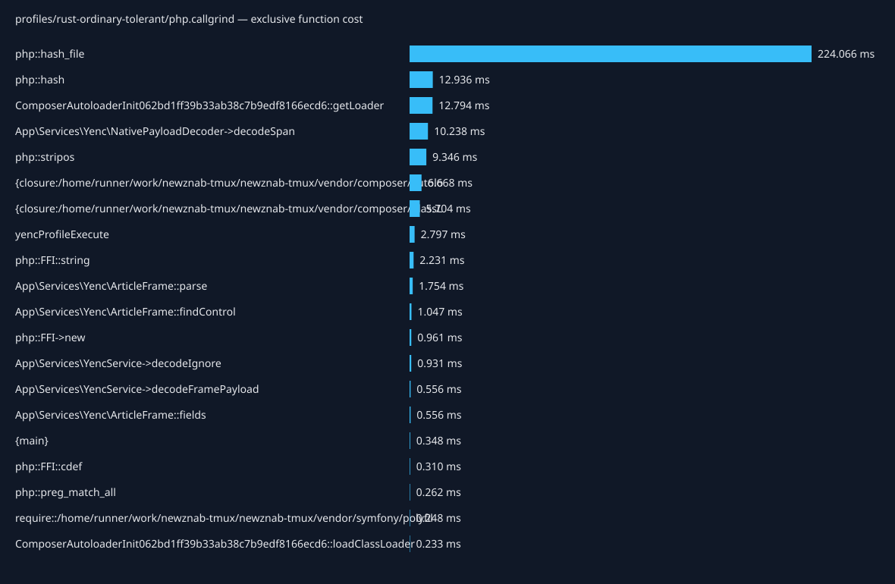
| Caller → callee | Calls | Inclusive cost (ms) |
|---|---|---|
| {main} → php::hash_file | 14 | 224.066 |
| {main} → yencProfileExecute | 1 | 44.396 |
| yencProfileExecute → App\Services\YencService->decodeIgnore | 101 | 28.433 |
| {main} → require::/home/runner/work/newznab-tmux/newznab-tmux/vendor/autoload.php | 1 | 22.067 |
| require::/home/runner/work/newznab-tmux/newznab-tmux/vendor/autoload.php → ComposerAutoloaderInit062bd1ff39b33ab38c7b9edf8166ecd6::getLoader | 1 | 21.977 |
| App\Services\YencService->decodeIgnore → App\Services\YencService->decodeFramePayload | 101 | 14.088 |
| App\Services\YencService->decodeFramePayload → App\Services\Yenc\NativePayloadDecoder->decodeSpan | 101 | 13.433 |
| App\Services\YencService->decodeIgnore → App\Services\Yenc\ArticleFrame::parse | 101 | 13.246 |
| App\Services\Yenc\ArticleFrame::parse → App\Services\Yenc\ArticleFrame::findControl | 303 | 10.504 |
| App\Services\Yenc\ArticleFrame::findControl → php::stripos | 202 | 9.346 |
| ComposerAutoloaderInit062bd1ff39b33ab38c7b9edf8166ecd6::getLoader → {closure:/home/runner/work/newznab-tmux/newznab-tmux/vendor/composer/autoload_real.php:37-43} | 51 | 8.906 |
| Composer\Autoload\ClassLoader->loadClass → {closure:/home/runner/work/newznab-tmux/newznab-tmux/vendor/composer/ClassLoader.php:575-577} | 23 | 7.916 |
| yencProfileExecute → yencProfileLoadFixture | 1 | 6.699 |
| yencProfileLoadFixture → php::hash | 2 | 6.469 |
| yencProfileExecute → php::hash | 2 | 6.467 |
| {main} → php::ReflectionClass->__construct | 9 | 4.238 |
| php::ReflectionClass->__construct → Composer\Autoload\ClassLoader->loadClass | 5 | 4.218 |
| App\Services\Yenc\NativePayloadDecoder->decodeSpan → php::FFI::string | 101 | 2.231 |
| {closure:/home/runner/work/newznab-tmux/newznab-tmux/vendor/composer/ClassLoader.php:575-577} → include::/home/runner/work/newznab-tmux/newznab-tmux/app/Services/NNTP/NNTPService.php | 1 | 1.182 |
| include::/home/runner/work/newznab-tmux/newznab-tmux/app/Services/NNTP/NNTPService.php → Composer\Autoload\ClassLoader->loadClass | 1 | 1.172 |
| App\Services\Yenc\NativePayloadDecoder->decodeSpan → php::FFI->new | 101 | 0.956 |
| App\Services\Yenc\ArticleFrame::parse → App\Services\Yenc\ArticleFrame::fields | 101 | 0.866 |
| {closure:/home/runner/work/newznab-tmux/newznab-tmux/vendor/composer/ClassLoader.php:575-577} → include::/home/runner/work/newznab-tmux/newznab-tmux/vendor/dariusiii/net_nntp/src/Client.php | 1 | 0.806 |
| {main} → App\Services\Yenc\DecoderFactory->make | 1 | 0.799 |
| include::/home/runner/work/newznab-tmux/newznab-tmux/vendor/dariusiii/net_nntp/src/Client.php → Composer\Autoload\ClassLoader->loadClass | 1 | 0.796 |
| {closure:/home/runner/work/newznab-tmux/newznab-tmux/vendor/composer/autoload_real.php:37-43} → require::/home/runner/work/newznab-tmux/newznab-tmux/vendor/nunomaduro/collision/src/Adapters/Phpunit/Autoload.php | 1 | 0.533 |
| App\Services\Yenc\DecoderFactory->make → App\Services\Yenc\NativePayloadDecoder->__construct | 1 | 0.447 |
| {main} → Composer\Autoload\ClassLoader->loadClass | 2 | 0.392 |
| require::/home/runner/work/newznab-tmux/newznab-tmux/vendor/nunomaduro/collision/src/Adapters/Phpunit/Autoload.php → Composer\Autoload\ClassLoader->loadClass | 1 | 0.329 |
| {closure:/home/runner/work/newznab-tmux/newznab-tmux/vendor/composer/autoload_real.php:37-43} → require::/home/runner/work/newznab-tmux/newznab-tmux/vendor/symfony/polyfill-mbstring/bootstrap.php | 1 | 0.317 |
Total exclusive profiled cost: 696.013 ms.
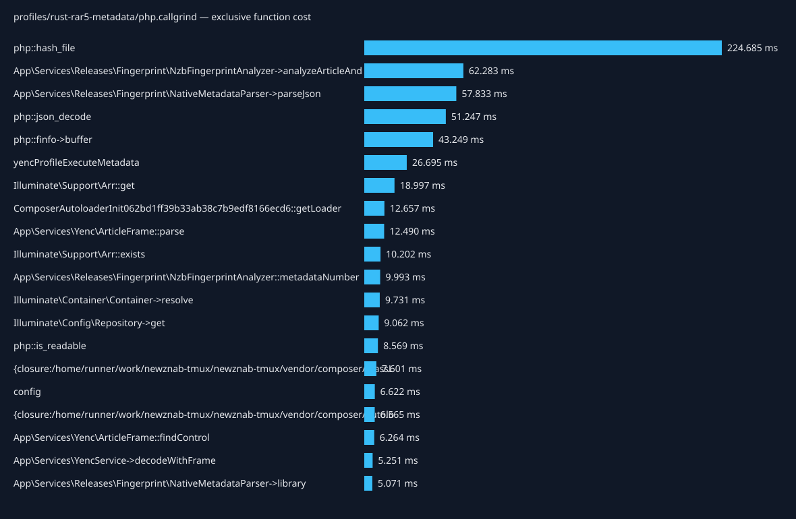
| Caller → callee | Calls | Inclusive cost (ms) |
|---|---|---|
| {main} → yencProfileExecute | 1 | 444.857 |
| yencProfileExecute → yencProfileExecuteMetadata | 1 | 444.466 |
| yencProfileExecuteMetadata → App\Services\Releases\Fingerprint\NzbFingerprintAnalyzer->analyzeArticleAndDecodedBytes | 501 | 411.901 |
| {main} → php::hash_file | 14 | 224.685 |
| App\Services\Releases\Fingerprint\NzbFingerprintAnalyzer->analyzeArticleAndDecodedBytes → App\Services\Releases\Fingerprint\NativeMetadataParser->parseFormats | 501 | 67.838 |
| App\Services\Releases\Fingerprint\NativeMetadataParser->parseFormats → App\Services\Releases\Fingerprint\NativeMetadataParser->parseJson | 501 | 66.027 |
| App\Services\Releases\Fingerprint\NzbFingerprintAnalyzer->analyzeArticleAndDecodedBytes → App\Services\Releases\Fingerprint\NativeMetadataParser->parseYencFraming | 501 | 53.466 |
| App\Services\Releases\Fingerprint\NativeMetadataParser->parseYencFraming → App\Services\Releases\Fingerprint\NativeMetadataParser->parseJson | 501 | 51.757 |
| App\Services\Releases\Fingerprint\NativeMetadataParser->parseJson → php::json_decode | 2505 | 51.247 |
| App\Services\Releases\Fingerprint\NzbFingerprintAnalyzer->analyzeArticleAndDecodedBytes → App\Services\Releases\Fingerprint\NativeMetadataParser->parseNntpHeaders | 501 | 49.051 |
| App\Services\Releases\Fingerprint\NativeMetadataParser->parseNntpHeaders → App\Services\Releases\Fingerprint\NativeMetadataParser->parseJson | 501 | 47.274 |
| App\Services\Releases\Fingerprint\NativeMetadataParser->parseJson → App\Services\Releases\Fingerprint\NativeMetadataParser->library | 1002 | 47.208 |
| config → Illuminate\Config\Repository->get | 2505 | 45.350 |
| App\Services\Releases\Fingerprint\NzbFingerprintAnalyzer->analyzeArticleAndDecodedBytes → php::finfo->buffer | 1002 | 43.249 |
| App\Services\Releases\Fingerprint\NativeMetadataParser->parseJson → App\Services\Releases\Fingerprint\NativeMetadataParser->headerLibrary | 1002 | 39.630 |
| Illuminate\Config\Repository->get → Illuminate\Support\Arr::get | 2505 | 35.499 |
| App\Services\Releases\Fingerprint\NativeMetadataParser->library → config | 1002 | 34.693 |
| App\Services\Releases\Fingerprint\NzbFingerprintAnalyzer->analyzeArticleAndDecodedBytes → App\Services\Releases\Fingerprint\NativeMetadataParser->compareNntpLinesToBody | 501 | 31.558 |
| App\Services\Releases\Fingerprint\NativeMetadataParser->headerLibrary → config | 1002 | 31.548 |
| config → app | 2505 | 30.045 |
| App\Services\Releases\Fingerprint\NativeMetadataParser->compareNntpLinesToBody → App\Services\Releases\Fingerprint\NativeMetadataParser->parseJson | 501 | 28.895 |
| App\Services\Releases\Fingerprint\NzbFingerprintAnalyzer->analyzeArticleAndDecodedBytes → App\Services\Releases\Fingerprint\NativeMetadataParser->parseNntpBody | 501 | 28.506 |
| App\Services\Releases\Fingerprint\NativeMetadataParser->parseNntpBody → App\Services\Releases\Fingerprint\NativeMetadataParser->parseJson | 501 | 26.864 |
| App\Services\Releases\Fingerprint\NzbFingerprintAnalyzer->analyzeArticleAndDecodedBytes → App\Services\YencService->decodeWithFrame | 501 | 24.633 |
| app → Illuminate\Container\Container->make | 2505 | 24.429 |
| {main} → require::/home/runner/work/newznab-tmux/newznab-tmux/vendor/autoload.php | 1 | 21.723 |
| require::/home/runner/work/newznab-tmux/newznab-tmux/vendor/autoload.php → ComposerAutoloaderInit062bd1ff39b33ab38c7b9edf8166ecd6::getLoader | 1 | 21.637 |
| App\Services\Releases\Fingerprint\NativeMetadataParser->parseJson → App\Services\Releases\Fingerprint\NativeMetadataParser->bodyLibrary | 501 | 19.858 |
| Illuminate\Container\Container->make → Illuminate\Container\Container->resolve | 2505 | 19.369 |
| App\Services\Releases\Fingerprint\NativeMetadataParser->bodyLibrary → config | 501 | 15.772 |
Searchable, zoomable sampled native stacks use separate optimized builds with debug information. Width represents folded CPU-clock period weights in nanoseconds, not sample counts or elapsed wall time. Event records are counted separately. Whole-process samples include setup and correctness verification. Unavailable or invalid captures cannot identify native hot paths.
| Workload | Capture status | Sample records | CPU-clock weight (ms) | Flamegraph |
|---|---|---|---|---|
| cpp-heavy-body | unavailable | 0 | 0.000 | unavailable |
| cpp-heavy-strict | unavailable | 0 | 0.000 | unavailable |
| cpp-heavy-tolerant | unavailable | 0 | 0.000 | unavailable |
| cpp-ordinary-body | unavailable | 0 | 0.000 | unavailable |
| cpp-ordinary-strict | unavailable | 0 | 0.000 | unavailable |
| cpp-ordinary-tolerant | unavailable | 0 | 0.000 | unavailable |
| rust-heavy-body | unavailable | 0 | 0.000 | unavailable |
| rust-heavy-strict | unavailable | 0 | 0.000 | unavailable |
| rust-heavy-tolerant | unavailable | 0 | 0.000 | unavailable |
| rust-ordinary-body | unavailable | 0 | 0.000 | unavailable |
| rust-ordinary-strict | unavailable | 0 | 0.000 | unavailable |
| rust-ordinary-tolerant | unavailable | 0 | 0.000 | unavailable |
| rust-rar5-metadata | unavailable | 0 | 0.000 | unavailable |